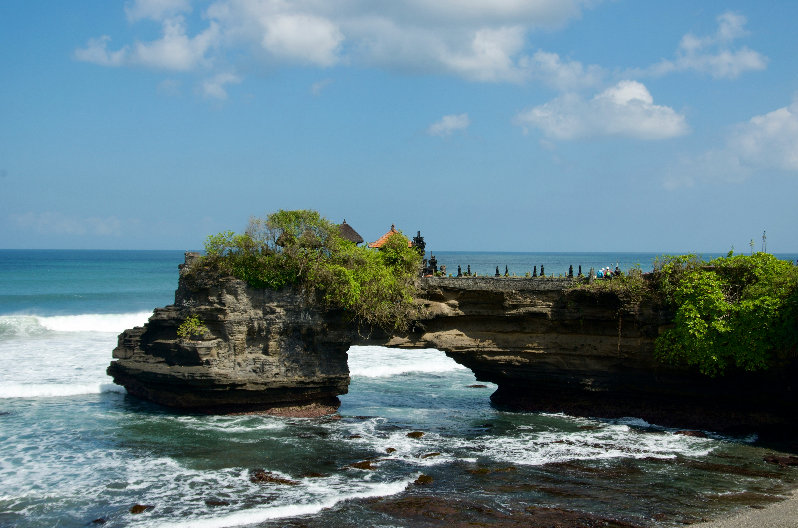

Sejarah

Pulau Bali memiliki sejarah yang kaya dan panjang yang dipengaruhi oleh berbagai kerajaan dan budaya. Sejarah Bali dimulai sejak zaman prasejarah dengan ditemukannya artefak dari budaya batu. Sekitar abad ke-9, Bali dipengaruhi oleh Hindu dan Buddha dari India melalui kerajaan-kerajaan di Jawa, seperti Kerajaan Majapahit. Pengaruh Hindu sangat kuat dan masih terlihat dalam budaya serta agama masyarakat Bali saat ini. Pada abad ke-16, Islam mulai menyebar di Indonesia, tetapi Bali tetap menjadi pusat agama Hindu. Bali kemudian menjadi kerajaan otonom sampai kedatangan Belanda pada abad ke-19. Pada 1906, Belanda menguasai Bali setelah perang sengit, namun budaya Bali tetap terjaga.
Setelah kemerdekaan Indonesia pada 1945, Bali menjadi bagian dari Republik Indonesia. Hingga kini, Bali dikenal sebagai destinasi wisata dunia dengan kekayaan budaya, seni, dan tradisi yang unik.
Geografis

Secara geografis, Bali terletak di antara Pulau Jawa dan Pulau Lombok. Mayoritas penduduk Bali adalah pemeluk agama Hindu. Di dunia, Bali terkenal sebagai tujuan pariwisata dengan keunikan berbagai hasil seni-budayanya dan juga mitosnya, khususnya bagi para wisatawan Jepang dan Australia. Bali juga dikenal dengan julukan Pulau Dewata dan Pulau Seribu Pura.
Wisata

Tanah Lot
Pura Tanah Lot adalah salah satu Pura (Tempat Ibadah Umat Hindu) yang sangat disucikan di Bali, Indonesia. Di sini ada dua Pura yang terletak di atas batu besar. Satu terletak di atas bongkahan batu dan satunya terletak di atas tebing mirip dengan Pura Uluwatu. Pura Tanah Lot ini merupakan bagian dari Pura Dang Kahyangan. Pura Tanah Lot merupakan Pura laut tempat pemujaan dewa-dewa penjaga laut. Tanah Lot terkenal sebagai tempat yang indah untuk melihat matahari terbenam.

Desa Penglipuran
Penglipuran adalah salah satu desa adat dari Kabupaten Bangli, Provinsi Bali, Indonesia. Desa ini terkenal sebagai salah satu destinasi wisata di Bali karena masyarakatnya yang masih menjalankan dan melestarikan budaya tradisional Bali dalam kehidupan mereka sehari-hari. Arsitektur bangunan dan pengolahan lahan masih mengikuti konsep Tri Hita Karana, filosofi masyarakat Bali mengenai keseimbangan hubungan antara Tuhan, manusia, dan lingkungannya. Mereka berhasil membangun pariwisata yang menguntungkan seluruh masyarakatnya tanpa menghilangkan budaya dan tradisi mereka. Pada tahun 1995, desa Penglipuran juga mendapatkan penghargaan Kalpataru dari pemerintah Indonesia atas usahanya melindungi hutan bambu di ekosistem lokal mereka.